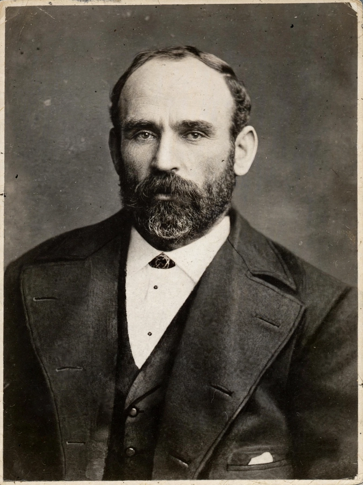

Michael Davitt (25 March 1846 – 30 May 1906) was an Irish republican activist, agrarian campaigner, labour leader, journalist, Home Rule politician and Member of Parliament who founded the Irish National Land League. He campaigned for peasant proprietorship, the abolition of landlordism, political prisoner rights and, later, land nationalisation.

| Born | 25 March 1846, Straide, County Mayo, Ireland |
|---|---|
| Died | 30 May 1906 (aged 60), Dublin, Ireland |
| Occupation | Activist, politician, journalist |
| Known for | Founding the Irish National Land League |
| Party | Irish Parliamentary Party |
Davitt was born in Straide, County Mayo, during the Great Famine. His family was evicted in 1850 for arrears and emigrated to Haslingden, Lancashire, England. He began working in a cotton mill as a child and lost his right arm in industrial machinery at age nine, an accident that ended factory labour and allowed him to attend school.
He joined the Irish Republican Brotherhood, the Fenians, in 1865 and became an organiser. In 1870 he was convicted of treason felony for arms trafficking and sentenced to fifteen years' penal servitude. Released on ticket of leave in 1877 after campaigns for prisoner amnesty, he was feted in Ireland and America.
Working with Charles Stewart Parnell, Davitt founded the Irish National Land League in 1879 during the Land War. The League demanded the Three Fs — fair rent, fixity of tenure and free sale — and organised rent strikes and boycotts, a term coined from the campaign against Captain Charles Boycott. Davitt's imprisonment in 1881 without trial provoked widespread protest. See also Home rule and Great Famine.
Davitt was elected MP for Meath in 1882 while imprisoned, and later represented North Meath and South Kerry. He broke with Parnell during the split, supported labour causes, wrote The Fall of Feudalism in Ireland (1904), and investigated pogroms in Russia and conditions in South Africa as a journalist opposed to the Boer War.
Davitt is remembered as the father of the Land League. The Michael Davitt Museum stands near his birthplace in Straide, and a bridge and many GAA clubs bear his name.